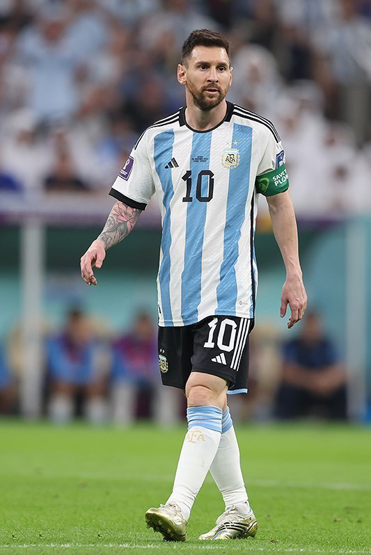
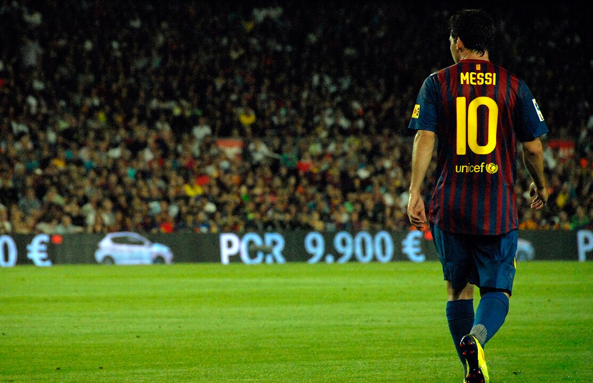

Lionel Messi is a football phenomenon, often celebrated as one of the greatest players the sport has ever seen. His journey from a young talent at Barcelona's La Masia to becoming a global icon is a testament to his incredible skill, dedication, and impact on the game. With an illustrious career decorated with multiple FIFA Ballon d'Or awards, record-breaking goals, and numerous titles, Messi continues to inspire fans and players around the world. Explore the magic of Messi's career, his memorable moments, and the accolades that make him a true legend of football.
 